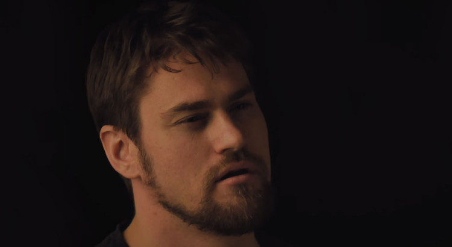

We Press Play: Episode #27
May 17, 2016
What's that you hear? That's right, a newly mastered podcast, hot off the presses! Only two bits a gander! Sailing only the least charted seas, we've got a giant breakdown on Uncharted 4, a quick dip into hell to face our Doom, Simon showing his true colours as an Insurgent, your fine emails, hot 3D-Printer news, riffin' on Video Game Movies, terrible segment music, and much more! As a side note, we've tried a few things differently this week in regards to our mastering process, if you've got any feedback - shoot us an email.
We've got a new email address: podcast@wepressbuttons.com - send your questions there!
Show Notes +
Show Notes -
We Press Play: Episode #26
May 10, 2016
Night gathers, and now my watch begins – for this beta, and all the patches to come. That’s right folks, the weekend-long Overwatch open beta is wrapping up – and we’ve all been playing it to death! We’ve also got fresh candle tips, advice about how to download your way into a Telstra job, grey-ware CD-Key sites, and the age old question: would you rather be always yelling, or always whispering? Find out the answers to all these figurative interrobangs above!
Show Notes +
Show Notes -
We Press Play: Episode #25
May 4, 2016
Come on and SLAM, and welcome to the 25th Episode of We Press Play! To celebrate, both Dota 2 and Rocket League were updated (on the same day, no less) – and we’ve got the hot scoops on the additions! Also in this episode – poop emoji announcements, the slow-motion car crash that is E3 2016, hot Nintendo news, yet another game-launcher to add to the pile, tutorialization, and MUCH MUCH MORE.
Show Notes +
Show Notes -


{kind=link}